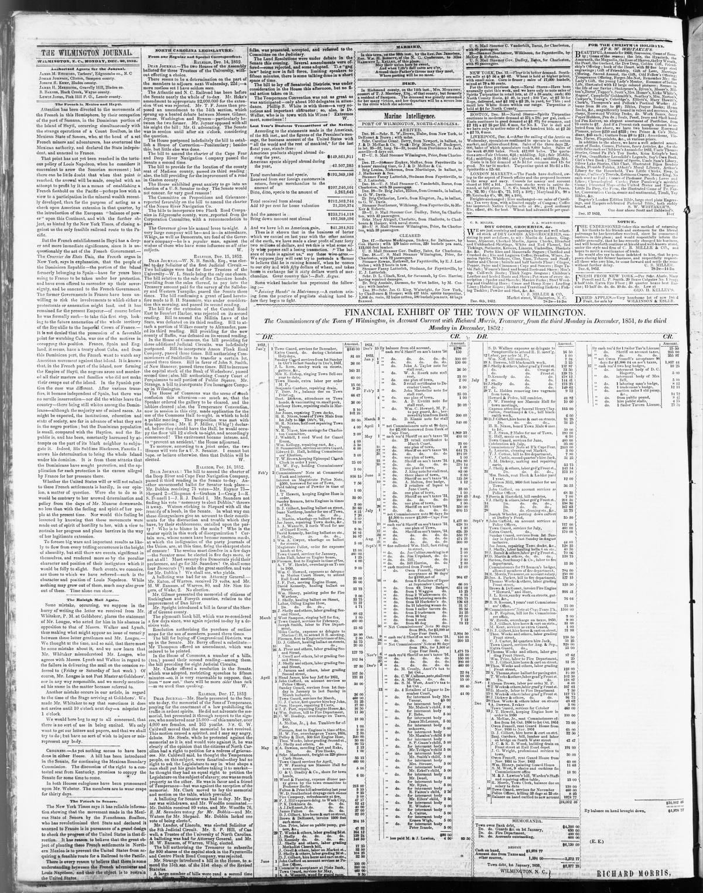

The former Governments in France have been un willing to risk
https://www.loc.gov/resource/sn84026536/1852-12-24/ed-1/?sp=4

See the original pageVer la página original
The Wilmington Journal reported on December 24, 1852, that the Dominican Republic had long sought French protection and offered annexation, a step the current French Emperor was taking to secure a strategic point for monitoring American movements regarding Cuba under existing treaties. The newspaper contrasted the history of the former Spanish portion—which achieved independence without a servile insurrection and retained a white and mixed population superior in society and education—with the former French portion (Hayti), where a violent slave uprising had occurred.
El Wilmington Journal comunicó el 24 de diciembre de 1852 que la República Dominicana procuró largamente el patronato de Francia y propuso su anexión, resolución que el actual soberano galo aprovechaba para guarecer un apostadero estratégico desde el cual observar las maniobras norteamericanas respecto a Cuba al amparo de las convenciones vigentes. El diario contrastaba los antecedentes de la antigua sección española —que conquistó su autonomía sin insurrecciones de esclavos y preservó un vecindario blanco y mestizo más encumbrado en cultura y letras— con la antigua colonia francesa (Haití), teatro de un sangriento levantamiento servil.
Where this standsEn qué punto está
The full text of this article is still being prepared. Until it is ready, this page carries a summary, the passage found on the page, and the link to the original, which is always one click away.El texto completo de este artículo aún se está preparando. Hasta que esté listo, esta página lleva un resumen, el pasaje encontrado en la página y el enlace al original, que siempre está a un clic.
From the original pageDe la página original
The passage where this article was found, copied from the newspaper page itself, reading errors and all. This is exactly what the summary above is based on.El pasaje donde se encontró este artículo, copiado de la propia página del periódico, con sus errores de lectura y todo. Esto es exactamente aquello en lo que se basa el resumen de arriba.
the Dominican Republic the portion of the Island
formerly belonging to Spain have for years been
suing to France to be taken under her protection,
and have even offered to surrender up their sover
eignty, and be annexed to the French Government.
The former Governments in France have been un
willing to risk the involvements to which either a
protectorate or annexation might lead, and it has
remained for the present Emperor of course before
lie was formally such to take this first step, look
ing to the future annexation of the whole territory
of the Rerublic to the Imperial Crown of France.
It is not denied that the possession of a favorable
point for watching Cuba, was one of the motives in
occupying this position. France, Spain and Eng
land', it seems, have a treaty about Cuba, and from
this Dominican port, the French want to watch any
American movement against that island. It is known
that, in the French part of the island, now forming
the Empire of Hayti, the negroes arose and murder
ed all their masters and families who did not make
their cseape out of the island. In the Spanish por
tion the case was different. After various trans
fers, it became independent of Spain, but there was
no servile insurrection nor did the whites leave the
country there being still whites among the Domin
icans although the majority are of mixed races. As
might be expected, the institutions, education; and
stata of society, are far in advance of what they are
in the negro portion but the Dominican population
is small, compared with the Haylien, and the Re
How to cite this articleCómo citar este artículo
Wilmington Journal. (1852). Wilmington, N.C., December 24, 185224 de diciembre de 1852. DR in the American PressRD en la Prensa Norteamericana. Library of Congress, Chronicling America: https://www.loc.gov/resource/sn84026536/1852-12-24/ed-1/?sp=4
ReferencesReferencias
Library of Congress, Chronicling America: Wilmington Journal, December 24, 185224 de diciembre de 1852.
Send an observationEnviar una observación
Does this article connect with your family, your town, or something you know? Did we get something wrong? Write to us. Observations go to the editor's inbox and are read by a person.¿Este artículo conecta con su familia, su pueblo o algo que usted conoce? ¿Nos equivocamos en algo? Escríbanos. Las observaciones llegan al buzón del editor y las lee una persona.
Send observationEnviar observación